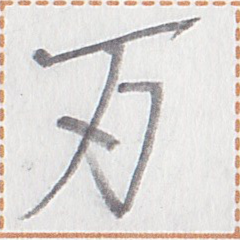

← Previous
Index
Next →
English: Tam speaks more slowly than Fisha.
Chinese:
小皇说话比龙意慢。
Chinese (pinyin): Xiǎo Huáng shuōhuà bǐ Lóngyì màn.
Pekzep (latin transcription): tam2 zep1 na1 ie hui2 xa2.
Pekzep (hanzi transcription):
皇言静於龍意。
Pekzep (linzklā):

Sound:
Your browser does not support the audio element.
Analysis:
tam2
皇
noun
Tam (name)
zep1
言
verb
to say
na1
静
post-verbial / sentence-final particle of manner
slowly
ie
於
coverb
compared to
hui2 xa2
龍意
noun
Fisha (name)